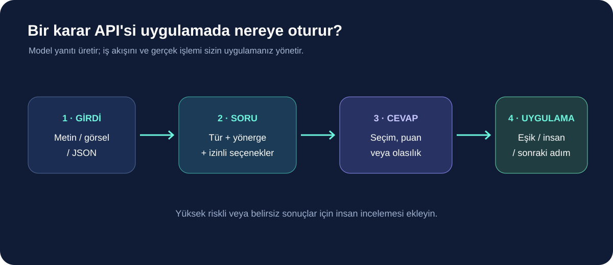
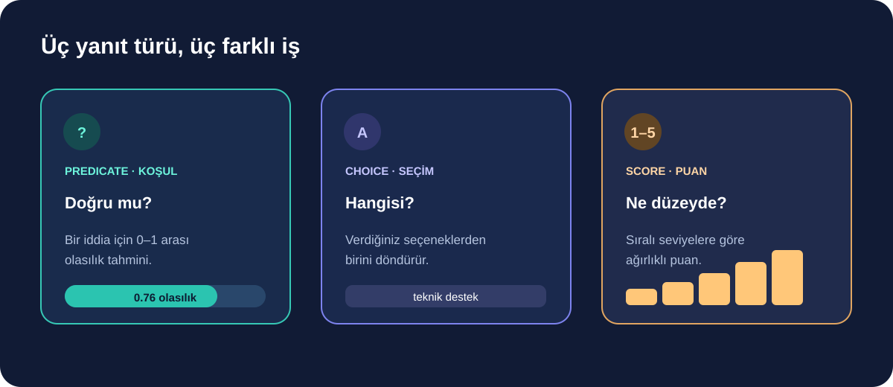

OpenAI, Decisions API'yi 22 Ekim 2026'da genel kullanıma açtı. Servis, uygulamaların bir metin, görsel veya yapılandırılmış veri hakkında sınırlı ve önceden tanımlanmış bir karar almasına yardımcı oluyor: örneğin bir talebi hangi ekibe yönlendirmek, içeriği kategorilere ayırmak ya da bir başvuruyu belirli ölçütlere göre puanlamak. API şu anda yalnızca gpt-6-luna modelini destekliyor.
Bu, her isteğe uzun bir yanıt yazan genel sohbet uç noktasının yerine geçecek sihirli bir araç değil. OpenAI, dar karar görevlerinde Responses API üzerinden aynı modeli kullanmaya kıyasla 10 kata kadar daha hızlı olabildiğini belirtiyor; bu şirketin kendi karşılaştırmasıdır ve gerçek uygulamadaki gecikme, girdi boyutu ile altyapıya göre değişir. Aşağıda ürünün ne yaptığını, bir ekibin nerede deneyebileceğini ve kararı otomatikleştirmeden önce hangi kontrollerin gerektiğini özetliyoruz.

Decisions API nasıl çalışıyor?
Geliştirici önce ortak girdiyi ve sorulacak soruları gönderiyor. Her sorunun türü ile istenen cevap biçimi belirleniyor; yanıt da serbest biçimli bir paragraf yerine makinenin işlemesi kolay, tiplenmiş bir sonuç olarak dönüyor. Belgelerde üç soru türü tanımlanıyor:
- Predicate (koşul): Bir ifadenin doğru olma olasılığını 0 ile 1 arasında döndürür. Örnek: “Fotoğrafta ürünün görünür bir hasarı var mı?”
- Choice (seçim): Önceden verdiğiniz seçeneklerden birini seçer. Örnek: “Bu destek talebi faturalandırma, teknik destek, kargo veya diğer ekiplerinden hangisine gitmeli?”
- Score (puan): Sıralı ölçüt seviyelerine göre bir puan hesaplar. Örnek: “Bu başvurudaki eksik bilgi düzeyi düşük, orta veya yüksek mi?”
Bu türlerin ortak noktası, sonuç alanının önceden belli olmasıdır. API kendi başına e-posta göndermez, para iadesi yapmaz veya veritabanı kaydını değiştirmez. Uygulama yanıtı yorumlar ve izin verilen bir sonraki adımı yürütür. Bu ayrım, yanlış sınıflandırmanın gerçek bir işleme dönüşmesini engelleyecek onay ve eşik kontrollerini tasarlamayı mümkün kılar.
Uygulamada nerelerde iş görebilir?
Özellikle sık tekrarlanan ve seçenekleri net tanımlanabilen küçük kararlar aday olabilir. Bir çevrimiçi mağaza gelen destek mesajını ekiplere ayırabilir; moderasyon kuyruğu içeriği inceleme önceliğine göre sıralayabilir; saha uygulaması görselde belirli bir nesne veya durum olup olmadığını kontrol edebilir. Bunlar ürünün belgelenen metin, görsel ve JSON desteğinden çıkarılabilecek kullanım örnekleridir; her senaryoda doğruluk veya tasarruf garantisi vermez.
| Görev | Soru biçimi | Sonraki adım örneği |
|---|---|---|
| Destek mesajı yönlendirme | Choice | Mesajı ilgili ekip kuyruğuna koy |
| Görselde hasar kontrolü | Predicate | Düşük güvenli sonuçları insana gönder |
| Başvuruları önceliklendirme | Score | Yüksek öncelikli kayıtları inceleme kuyruğuna al |
Örneğin mağaza destek sisteminde seçenekleri “ödeme”, “teslimat”, “teknik sorun” ve “diğer” olarak tanımlayabilirsiniz. “Diğer” seçeneği önemlidir: olası bütün durumlar listede yoksa modelin talebi zorla yanlış bir kategoriye yerleştirmesi yerine güvenli bir inceleme kuyruğu kalır. Ayrıca sonuç olasılıklarını kullanıp düşük güvenli seçimleri otomatik yönlendirmemek mümkün.

22 Ekim güncellemesinde neler eklendi?
API ilk olarak 6 Ekim'de beta olarak duyurulmuştu. 22 Ekim tarihli genel kullanıma açılışla birlikte OpenAI; ortak girdiyi tekrar kullanan istekler için önbellekleme, soruya özel görsel yönergeleri, JSON girdisi, konuşma geçmişi ve tek istekte en fazla 400 soru desteğini belgeledi. Bu üst sınır, her uygulamanın tek istekte yüzlerce soru sorması gerektiği anlamına gelmez; işi küçük parçalara ayırmanın daha anlaşılır ve denetlenebilir olduğu durumlar olabilir.
Dokümantasyonda API için özel bir POST /v1/decisions uç noktası ve kuruluş kullanım raporlaması da bulunuyor. Fiyat, önbellek ve bölgesel işlem ayrıntıları kullanıma ve hesap koşullarına bağlı olabileceğinden entegrasyondan önce güncel resmi fiyatlandırma sayfasını kontrol edin. OpenAI duyurusu, giriş tokenı başına fiyatlandırma ve çıktı tokenı için ücret alınmaması gibi temel noktaları açıklıyor; fakat toplam maliyet, ne kadar bağlam gönderdiğinize ve önbelleğin gerçekten isabet edip etmediğine de bağlı.
Bir uygulamaya eklemeden önce sınayın
“10 kata kadar hızlı” ifadesi tek başına üretime geçiş kararı vermek için yeterli değil. Önce gerçek kullanımınızı temsil eden, mümkünse kişisel bilgilerden arındırılmış örneklerden bir değerlendirme kümesi hazırlayın. Seçenekleri kapsayıcı tanımlayın, zor ve belirsiz örnekleri ekleyin, sonuçları insan incelemesiyle karşılaştırın. Yanlış olumlu ve yanlış olumsuz sonuçların maliyeti eşit olmayabilir; örneğin bir içeriği gereksiz yere moderasyona göndermekle zararlı içeriği kaçırmak aynı etkiye sahip değildir.
İlk aşamada API sonucunu yalnızca öneri olarak kullanıp gerçek işlemi insan onayına bağlamak daha güvenli bir denemedir. Ölçülmesi gerekenler; gecikme, yanlış sınıflandırma oranı, incelemeye düşen kayıt sayısı, maliyet ve sistemin alışılmadık girdilerde nasıl davrandığıdır. Başarı eşiği işin riskine göre belirlenmeli; “diğer” veya düşük güven yanıtı için açık bir geri dönüş yolu bulunmalıdır.
Gizlilik ve güvenlik tarafında sorulacaklar
API'ye gönderilen verinin hangi amaçla işlendiğini, ne kadar süre tutulduğunu ve hangi veri kontrollerinin hesabınız için geçerli olduğunu OpenAI'nin resmi belgelerinden doğrulayın. Şirket, uygun müşteriler için Zero Data Retention desteği ve ABD ile Avrupa'da bölgesel işlem seçenekleri bulunduğunu belirtiyor; uygunluk ve sınırlamalar hesap türüne, ayarlara ve anlaşmalara göre değişebilir. Bu ifadeleri tüm kullanıcılar için varsayılan gizlilik garantisi gibi yorumlamayın.
Gerekmeyen kişisel verileri istekten çıkarın, API anahtarlarını tarayıcıya veya herkese açık depoya koymayın ve model yanıtını güvenilir bir talimat olarak kabul etmeyin. Özellikle para, erişim, işe alım veya sağlık gibi yüksek etkili kararları tek bir model puanına bağlamayın. Uygulama tarafında yetki sınırları, kayıt tutma, insan incelemesi ve gerektiğinde geri alma adımları tasarlayın.
Küçük ve ölçülebilir bir yerden başlayın
Decisions API'nin en net kullanım alanı, zaten sabit seçeneklere göre yürüyen tekrarlı sınıflandırma ve sıralama adımlarıdır. İlk denemede tek bir görev seçin; mevcut yöntemin hızını ve hata oranını kaydedin, aynı ölçümleri API ile tekrarlayın. Sonuç belirgin biçimde iyileşmiyorsa yalnızca yeni olduğu için otomasyona geçmek anlamlı değildir.
Özetle API, uygulama geliştiricilerine her küçük karar için uzun metin üretmek yerine doğrudan işlenebilir yanıtlar alma yolu sunuyor. Faydası, ancak dar kapsam, iyi tanımlı seçenekler, gerçek örneklerle değerlendirme ve riskli sonuçlarda insan kontrolüyle ortaya çıkar.
Kaynaklar
- OpenAI: Build more responsive apps with the Decisions API (22 Ekim 2026)
- OpenAI API belgeleri: Decisions rehberi
- OpenAI API değişiklik günlüğü
- OpenAI API referansı: karar oluşturma uç noktası
Son kontrol: 23 Ekim 2026. API özellikleri, erişilebilirlik ve fiyatlandırma değişebilir; uygulama kararı öncesi resmi belgeleri yeniden kontrol edin.